Citrix Director 2411
Navigation
- Change Log
- Director Licensing - Premium Edition
- Install/Upgrade Director 2411 on Standalone Server
- Director Default Webpage
- Domain Field on Director Logon Page
- Director Tweaks
- Director - Saved Filters
- Director and HDX Insight
- Monitoring Database Grooming
- Director Single Sign On
- Director - Multiple Citrix Virtual Apps and Desktops Sites/Farms
- Director Process Monitoring
- Infra Monitor
- Director Alerts and Notifications
- Director - Probes
- Director - Custom Reports
- Use Director 2411
:idea: = Recently Updated
Change Log
- 2024 Dec 7 - Infra Monitor 2411 - Delivery Controller monitoring; use GUI to add components
- 2024 Dec 5 - Advanced Alerts added Data source in 2411. Bulk alert dismissal.
- 2024 Dec 4 - Updated article for version 2411
- 2024 Aug 4 - Infra Monitor
Director Licensing - Premium Edition
Here's a list of Director features that require CVAD Premium Edition licensing.
-
Up to a year’s worth of performance data
- Other editions keep up to 30 days of performance data
- Probes
- Alerts
- OS usage reporting
- Application usage monitoring charts on Dashboard in CVAD 2407 and newer
- Create customized reports
- Reboot warnings
- NetScaler Console integration - HDX Insight
See Citrix Docs Feature compatibility matrix for a list of which Director feature came with each version, and the licensing Edition needed for each feature.
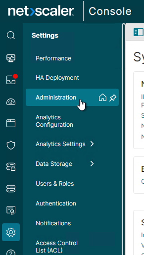
Install/Upgrade Director 2411 on Standalone Server
Current Release vs LTSR – Director version 2411 is a Current Release, which is supported for 6 months from its release date. You are expected to upgrade it twice per year.
Install on Delivery Controller? - The Citrix Virtual Apps and Desktops (CVAD) Delivery Controller metainstaller has an option to install Director on the Delivery Controller machine. Or you can install Director on separate, dedicated machines.
- If Director will connect to multiple sites/farms, then install Director on its own servers.
- For small environments, it might be OK to install Director on the Delivery Controller machines. Otherwise, Director is usually installed on separate machines.
- Director is an IIS website. If you install Director, then IIS is also installed.
Scripted install - To install and configure Director using a script, see Dennis Span Citrix Director unattended installation with PowerShell.
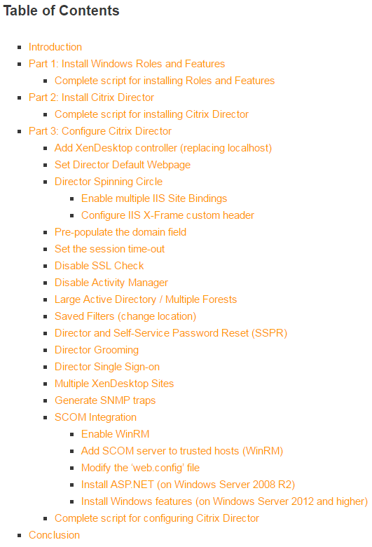
Manual installation - To install Director manually:
- Run AutoSelect.exe from the Citrix Virtual Apps and Desktops 2411 ISO.
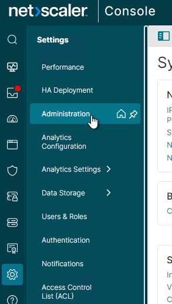
- In the Extend Deployment section, on the bottom left, click Citrix Director.
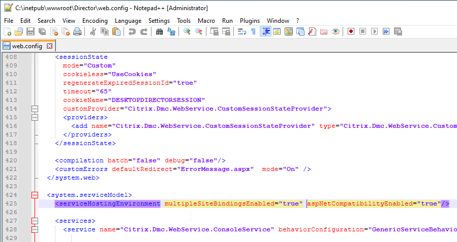
- In the Licensing Agreement page, select I have read, understand, and accept the terms, and click Next.
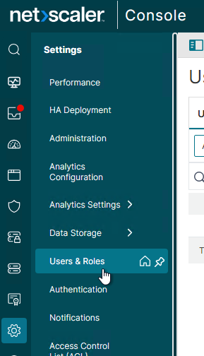
- In the Core Components page, click Next.
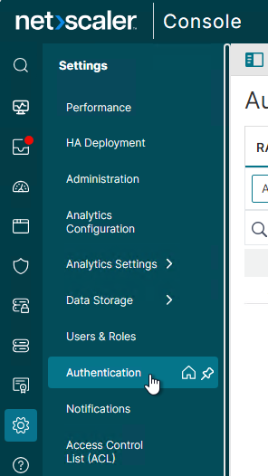
-
In the Delivery Controller page, it will ask you for the location of one Delivery Controller in each farm. Only enter one Delivery Controller per farm. If you have multiple Director servers, each Director server can point to a different Delivery Controller in each farm.
- From Citrix Docs: Director automatically discovers all other Delivery Controllers in the same Site and falls back to those other Delivery Controllers if the Controller you specified fails. Click Test Connection, and then click Add.
- You can optionally force SSL/TLS for the Monitoring service by following the instructions at Data Access Security at Citrix Developer Documentation. Also see CTX224433 Error: “Cannot Retrieve Data” on Citrix Director Dashboard After Securing OData Interface Through TLS.
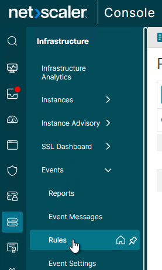
- In the Features page, click Next.
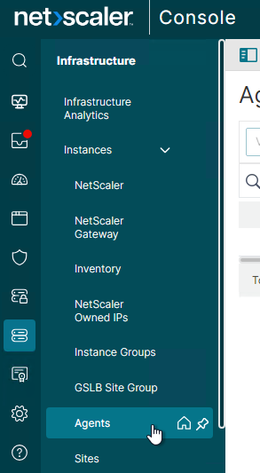
- In the Firewall page, click Next.
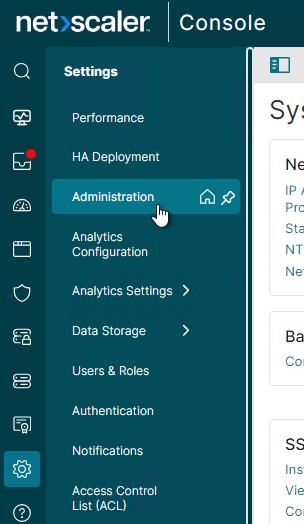
- In the Summary page, click Install.
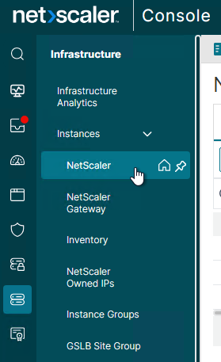
- In the Finish page, click Finish.
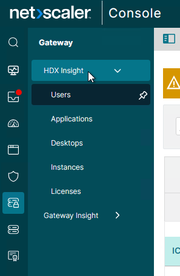
-
In IIS Manager, go to Default Web Site > Director > Application Settings, find Service.AutoDiscoveryAddresses and make sure it points to one Delivery Controller in the farm and not to localhost. From Citrix Docs: Director automatically discovers all other Delivery Controllers in the same Site and falls back to those other Delivery Controllers if the Delivery Controller you specified fails.
-
You can optionally force SSL/TLS for the Monitoring service by following the instructions at Data Access Security at Citrix Developer Documentation. Also see CTX224433 Error: “Cannot Retrieve Data” on Citrix Director Dashboard After Securing OData Interface Through TLS.
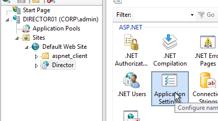
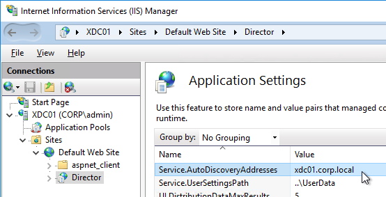
- If you built multiple Director servers, use NetScaler to load balance them.
- Reconfigure the default domain in LogOn.aspx since upgrading overwrote your domain name configuration.
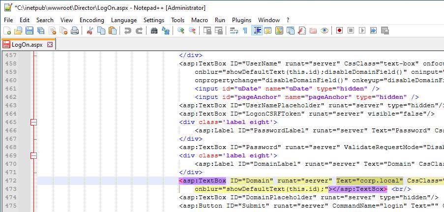
- For info on the new monitoring features in Director, see Use Director below.
Director Default Web Page
From Carl Webster How to Make Director the Default Page within IIS: If Director is installed on a standalone server, do the following to set /Director as the default path. If Director and StoreFront are on the same server, then you'll probably want StoreFront Receiver for Web as the default web page instead of Director.
-
Open Notepad elevated (as administrator) and paste the following text:
-
Adjust the window.location line to match your FQDN.
- Select File > Save As and browse to the IIS folder, by default C:\inetpub\wwwroot is the IIS folder.
- Select the Save as type to All types.
- Type a file name with an html extension and select Save.
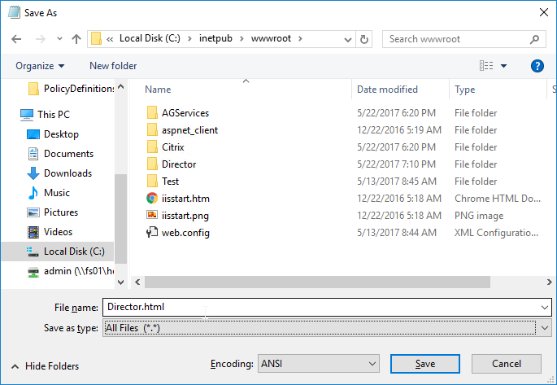
- Open IIS Manager.
- Select the SERVERNAME node (top-level), and double-click Default Document, as shown in the following screen shot:
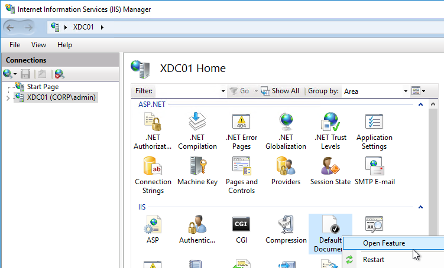
- On the right, click Add…,
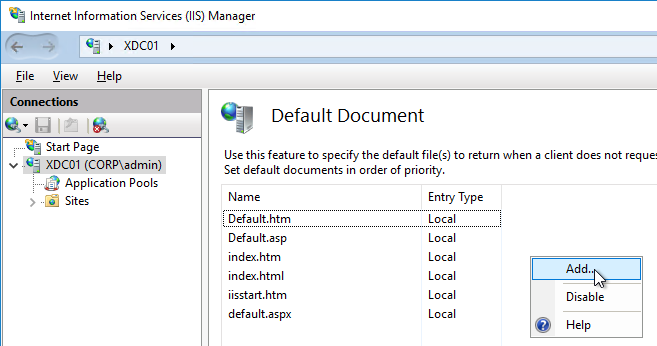
- Enter the file name of the .html file provided in Step 5.
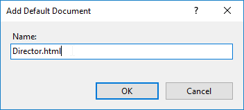
- Ensure the .html file is located at the top of the list, as shown in the following screen shot:
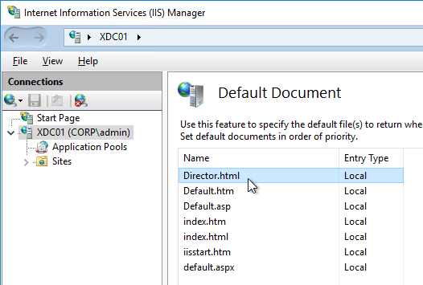
Director Domain Field
On the Director servers, locate and edit the ‘LogOn.aspx’ file. By default, you can find it at C:\inetpub\wwwroot\Director\Logon.aspx
In line 472 you will have the following. To find the line, search for ID="Domain".
<asp:TextBox ID="Domain" runat="server" CssClass="text-box" onfocus="showIndicator(this);" onblur="hideIndicator(this);"></asp:TextBox>
In the ID="Domain" element, insert a Text attribute and set it to your domain name inside quotes. Don't change or add any other attributes. Save the file.
<asp:TextBox ID="Domain" runat="server" **Text="Corp.local"** CssClass="text-box" onfocus="showIndicator(this);" onblur="hideIndicator(this);"></asp:TextBox>
This configuration prepopulates the domain field text box with your domain name and still allow the user to change it, if that should be required. Note: this only seems to work if Single Sign-on is disabled.

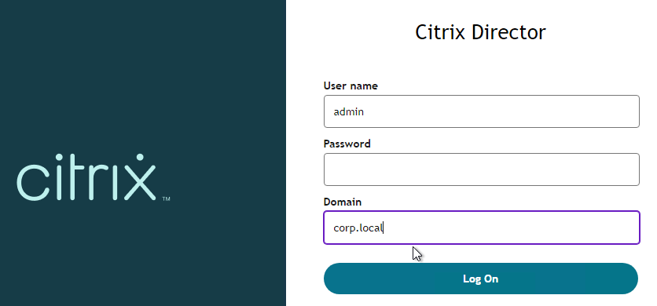
Director Tweaks
Session timeout
By default, the idle time session limit of the Director is 65 min. If you wish to change the timeout, here is how to do it:
- Log on to the Director Server as an administrator.
- Open the ‘IIS Manager’
- Browse to ‘Sites > Default Web Site > Director’ in the left-hand pane.
- Open ‘Session State’ in the right-hand pane.
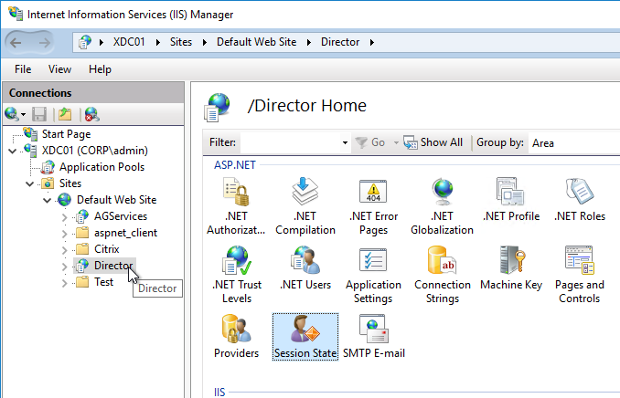
- Change the ‘Time-out (in minutes)’ value under ‘Cookie Settings’
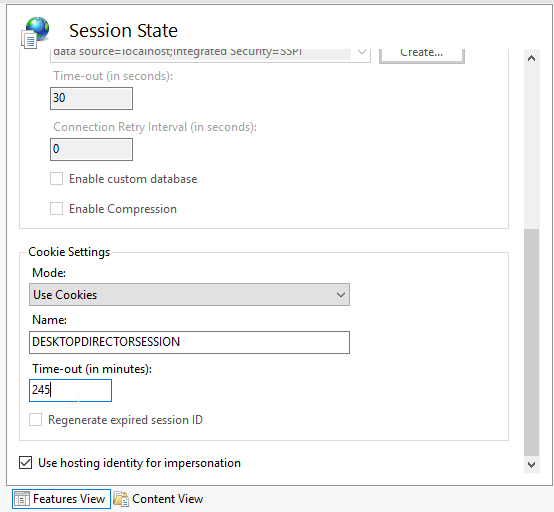
- Click ‘Apply’ in the Actions list
SSL Check
If you are not securing Director with an SSL certificate you will get this error at the logon screen.
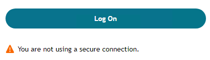
To stop this:
- Log on to the Director Server as an administrator
- Open the ‘IIS Manager’
- Browse to ‘Sites > Default Web Site > Director’ in the left-hand pane.
- Open ‘Application Settings’ in the right-hand pane.
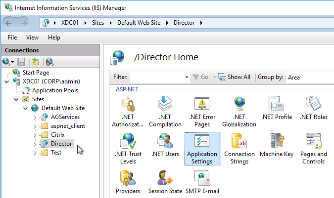
- Set UI.EnableSslCheck to false.
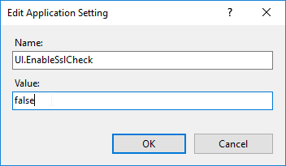
Disable Activity Manager
From Disable the visibility of running applications in the Activity Manager in Advanced Configuration at Citrix Docs: By default, the Activity Manager in Director displays a list of all the running applications and the Windows description in the title bars of any open applications for the user's session. This information can be viewed by all administrators that have access to the Activity Manager feature in Director. For Delegated Administrator roles, this includes Full administrator, Delivery Group administrator, and Help Desk Administrator.
To protect the privacy of users and the applications they are running, you can disable the Applications tab from listing running applications.
- On the VDA, modify the registry key located at HKLM\Software\Citrix\Director\TaskManagerDataDisplayed. By default, the key is set to 1. Change the value to 0, which means the information will not be displayed in the Activity Manager.
-
On the server with Director installed, modify the setting that controls the visibility of running applications. By default, the value is true, which allows visibility of running applications in the Applications tab. Change the value to false, which disables visibility. This option affects only the Activity Manager in Director, not the VDA. Modify the value of the following setting:
UI.TaskManager.EnableApplications = _false_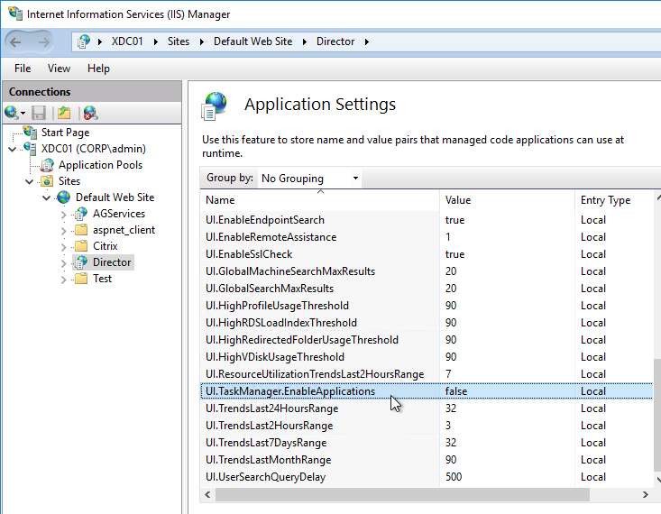
Large Active Directory / Multiple Forests
From CTX133013 Desktop Director User Account Search Process is Slow or Fails: By default, all the Global Catalogs for the Active Directory Forest are searched using Lightweight Directory Access Protocol (LDAP). In a large Active Directory environment, this query can take some time or even time out.
If multiple forests, see Citrix Blog Post Using Citrix Director in a MultiForest Environment.
- In Information Server (IIS) Management, under the Desktop Director site, select Application Settings and add a new value called Connector.ActiveDirectory.ForestSearch. Set it to False. This disables searching any domain except the user’s domain and the server’s domain.
- To search more domains, add the searchable domain or domains in the Connector.ActiveDirectory.Domains field.
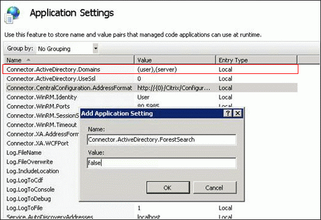
Site Groups
From Citrix Blog Post Citrix Director 7.6 Deep-Dive Part 4: Troubleshooting Machines:
If there are a large number of machines, the Director administrator can now configure site groups to perform machine search so that they can narrow down searching for the machine inside a site group. The site groups can be created on the Director server by running the configuration tool via command line by running the command:
C:\inetpub\wwwroot\Director\tools\DirectorConfig.exe /createsitegroups
Then provide a site group name and IP address of the delivery controller of the site to create the site group.
Director - Saved Filters
In Director, you can create a filter and save it.
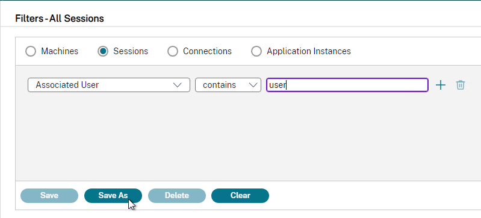
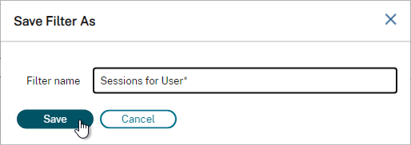
The saved filter is then accessible from the right side of the Filters node by clicking the Saved Filters tab.
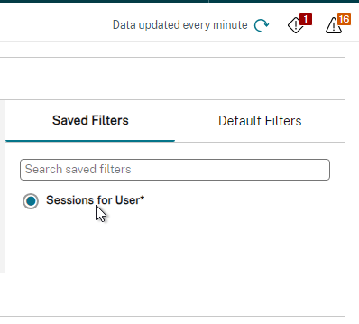
The saved filters are stored on each Director server at C:\Inetpub\wwwroot\Director\UserData. Each user has their own saved filters. The saved filters are not replicated across Director servers.
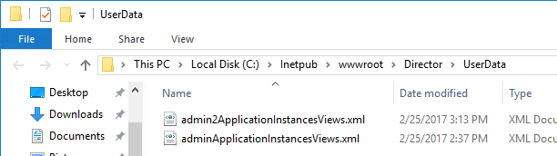
You can instead configure multiple Director servers to store the filters on a shared UNC path:
- Create and share a folder (e.g. DirectorData).
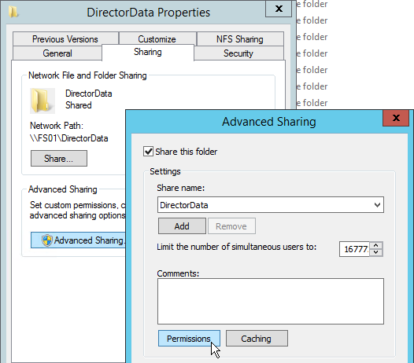
- The Director server computer accounts need Modify permission to the share.
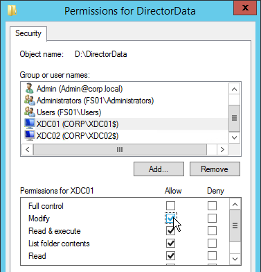
- On each Director server, run IIS Manager.
- Go to Sites > Default Web Site > Director. In the middle, double-click Application Settings.
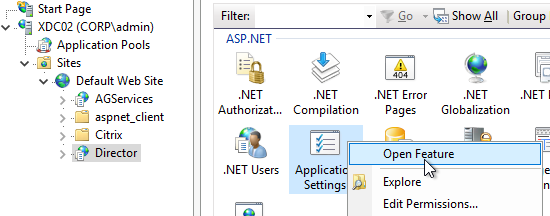
- Change the Service.UserSettingsPath setting to the UNC path of the new share.
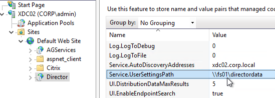
- Repeat this on other load balanced Director servers.
Director and HDX Insight
You can connect Director to NetScaler Console (formerly ADM) to add Network tabs to Director's Trends and Machine Details views. Citrix Blog Post Configure Director with NetScaler Management & Analytics System (MAS).
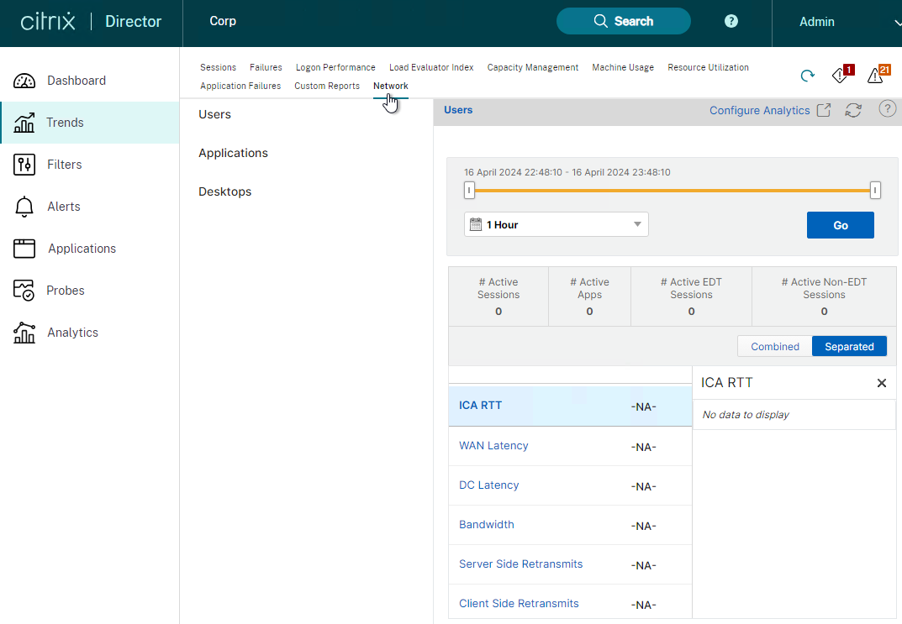
- Run "C:\inetpub\wwwroot\Director\tools\DirectorConfig.exe" /confignetscaler
- Select NetScaler Management and Analytics System
Director Grooming
If Citrix Virtual Apps and Desktops (CVAD) is not Premium Edition, then all historical Director data is groomed at 30 days.
For Citrix Virtual Apps and Desktops (CVAD) Premium Edition, by default, most of the historical Director data is groomed at 90 days. This can be adjusted up to 367 days by running a PowerShell cmdlet.
- On a Delivery Controller, run Get-MonitorConfiguration to see the current grooming settings.
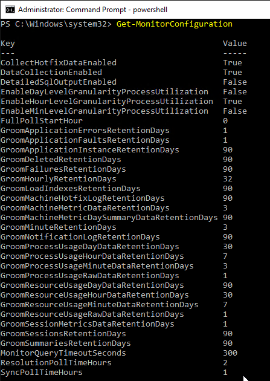
- Run Set-MonitorConfiguration to change the grooming settings.
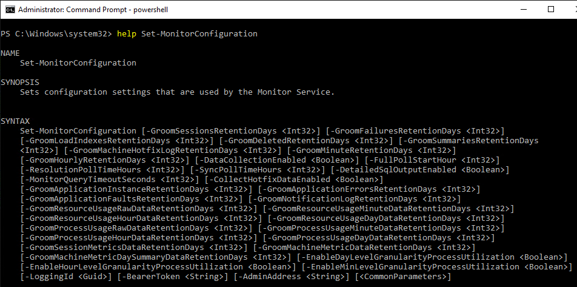
More details on Monitor Service data aggregation and retention can be found at Data granularity and retention at Citrix Docs.
Director Single Sign-on
You can configure Director to support Integrated Windows Authentication (Single Sign-on). Note: there seem to be issues when not connecting from the local machine or when connecting through a load balancer.
- Run IIS Manager. You can launch it from Server Manager (Tools menu), or from the Start Menu, or by running inetmgr.
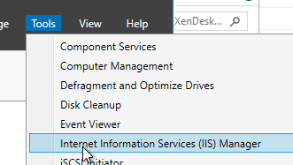
- On the left, expand Sites, expand Default Web Site, and click Director.
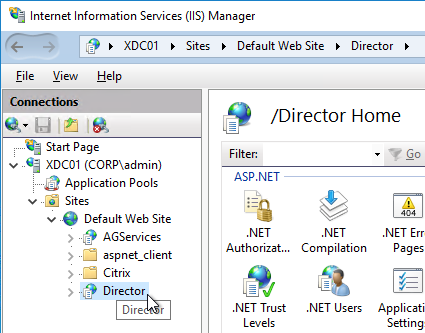
- In the middle, double-click Authentication in the IIS section.
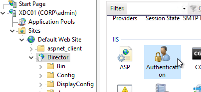
- Right-click Windows Authentication and Enable it.
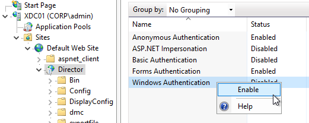
- Right-click Anonymous Authentication and Disable it.
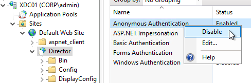
- Pass-through auth won't work from another computer until you set the http SPN for the Director server. See Director 7.7 Windows Authentication not working with NS LB at Citrix Discussions.
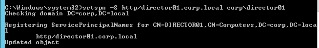
- If Director is not installed on a Controller, then you'll need to configure Kerberos delegation.
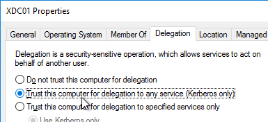
-
If you are load balancing Director then additional config is required. See Director 7.7 Windows Authentication not working with NS LB at Citrix Discussions for more info.
- The FQDN for Director load balancing should be different than the FQDN for StoreFront load balancing.
- Create an AD service account that will be used as the Director's ApplicationPoolIdentity.
-
Create SPN and link it to the service account.
-
Trust the user account for delegation to any service (Kerberos only) (trust the Director servers for delegation is not necessary in this case). You have to create the SPN before you can do this step.
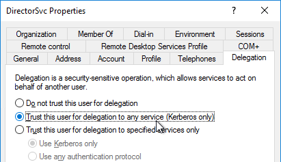
- In IIS manager, on the Application Pools (Director), specify the Identity as user we have created earlier.
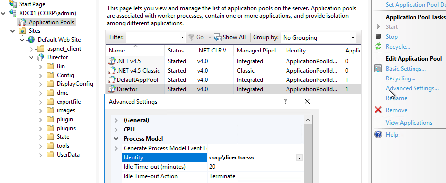
- In IIS manager, expand Default Web Site, select Director, and open the Configuration Editor (bottom of the middle pane).
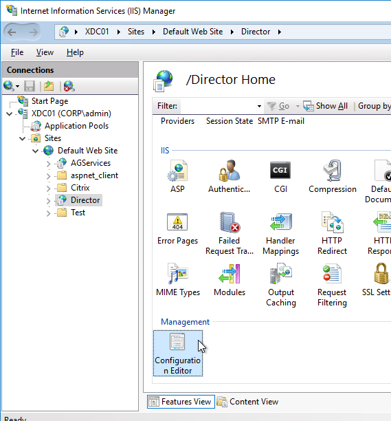
- Use the drop-down to navigate to the following section:
system.webServer/security/authentication/windowsAuthentication
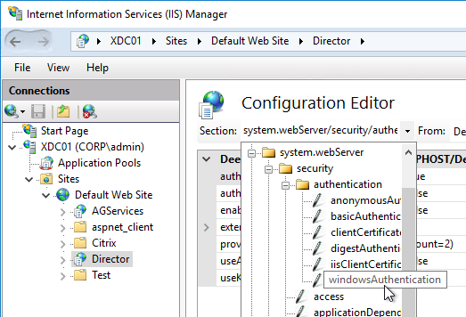
- Set useAppPoolCredentials = True, and useKernelMode = False. Click Apply on the top right.
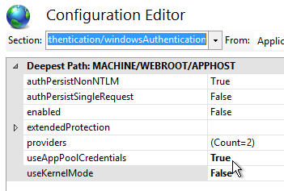
- When you connect to Director you will be automatically logged in. You can change the login account by first logging off.
- Then change the drop-down to User credentials.
Director - Multiple Citrix Virtual Apps and Desktops (CVAD) Sites/Farms
- Run IIS Manager. You can launch it from Server Manager (Tools menu) or from the Start Menu, or by running inetmgr.
- On the left, expand Sites, expand Default Web Site, and click Director.
- In the middle pane, double-click Application Settings.
- Find the entry for Service.AutoDiscoveryAddresses, and double-click it.
- If Director is installed on a Controller, localhost should already be entered.
-
Add a comma, and the NetBIOS name of one of the controllers in the 2nd Citrix Virtual Apps and Desktops Site (farm). Only enter one Delivery Controller name. If you have multiple Director servers, you can point each Director server to a different Delivery in the 2nd Citrix Virtual Apps and Desktops Site (farm).
- From Citrix Docs: Director automatically discovers all other Delivery Controllers in the same Site and falls back to those other Delivery Controllers if the Delivery Controller you specified fails.
- You can optionally force SSL/TLS for the Monitoring service by following the instructions at Data Access Security at Citrix Developer Documentation.
Director Process Monitoring
Director has Process Monitoring, which is detailed in Citrix Blog Post Citrix Director: CPU, Memory Usage and Process Information.
Process Monitoring is disabled by default. To enable it, configure the Enable process monitoring setting in a Citrix Policy. For Citrix Policies in a GPO, find this setting in the computer half of the GPO. Note: this setting could significantly increase the size of the Monitoring database.
Infra Monitor
Infra Monitor is available in Director 2407 and newer.
- In CVAD 2411 and newer, Infrastructure monitoring of Delivery Controllers is included by default. Delivery Controller 2411 and newer automatically include the monitoring agent.
- For StoreFront and PVS, download Citrix Infra Monitor 2411.
- On StoreFront servers and PVS servers, run CitrixInfraMonitor.msi.
- In the Welcome to the Citrix Infra Monitor Setup Wizard page, click Next.

- In the End-User License Agreement page, check the box next to I accept the terms and click Next.
- In the Destination Folder page, click Next.

- In the Ready to install Citrix Infra Monitor page, click Install.

- In the Citrix Infra Monitor installation complete page, notice the file path, and then click Finish.
- If you want HTTPS for the service, then see Citrix Docs.
- In Director 2411 and newer, click Infrastructure on the left, and on the top-right click Manage components.
- Select a Component type (PVS or StoreFront), enter Credentials, and click Create.
- Select a Component type (PVS or StoreFront), enter Credentials, and click Create.
-
If Director 2407:
- On the component machine, go to C:\programdata\Citrix\InfraMonitor and open the file.
- If the Registration Token file disappears, then simply restart the Citrix Infra Monitor Service.
-
On the Director server, in PowerShell, run the following command using the registration token you got from the file. Component can be either "SF" or "PVS".
- On the component machine, go to C:\programdata\Citrix\InfraMonitor and open the file.
-
After a few minutes, in Director, click Infrastructure, and your component should be shown. It's not immediate so you might have to wait a few minutes.
Director Alerts and Notifications
Director supports alert conditions and email notifications. This feature requires Citrix Virtual Apps and Desktops (CVAD) to be licensed with Premium Edition. See Citrix Blog Post Configuring & Managing Alerts and Notifications Using Director for more information.
Director 2407 and newer have Advanced Alerts. For example: Machines failed to power on.
- Go to Alerts and switch to the Advanced Alert Policies tab.
- Director 2411 adds Data source with options for Machines, Provisioning Service, StoreFront, and Delivery Controller.
- Scroll down to Conditions and select Condition types, Parameters, Options, and Metrics. The available options depend on the selected Data source and selected Condition.
- You can apply the alert policy to a selected scope and exclude machines from that scope.
Director supports Hypervisor Alerts from vSphere and Citrix Hypervisor. The alerts are configured in the hypervisor (e.g., vCenter). When triggered, the hypervisor alerts can be viewed in Director. Director can send email notifications when hypervisor alerts are triggered. Director 2411 supports dismiss for multiple alerts (aka bulk alert dismissal).
- Hypervisors can generate many alerts, but Director does not have a bulk method of clearing those alerts. Citrix wrote a PowerShell script named DismissAlerts.ps1 that runs a SQL query to clear the Hypervisor alerts.
To configure alerts in Director:
- While logged into Director, click the Alerts node.
- On the right, switch to the Email Server Configuration tab.
- Enter your SMTP information and click Send Test Message. Then click Save.
- Switch to the Citrix Alerts Policies tab.
- There are five high-level categories of alerts: Site Policy, Delivery Group Policy, Multi-session OS Policy (aka Server OS Policy), User Policy, and Infrastructure Policies. Click whichever one you want to configure.
- CVAD 2407 and newer include Infrastructure Policies for PVS and StoreFront.
- Infrastructure Policies have Categories, Conditions, Metrics, and Scopes.
- CVAD 2407 and newer include Infrastructure Policies for PVS and StoreFront.
- Director has built-in alert policies. All you need to do is add notification email addresses to the built-in policies.
- In Director 1811 and newer, in the Site Policy tab, click Edit for the built-in Hypervisor Health policy.
- In the Send mails field, enter a destination email address and click Add. Click Save when done.
- In Director 2407 and newer, some Conditions, like Unregistered machines, let you include a .csv file as an attachment.
- In the Send mails field, enter a destination email address and click Add. Click Save when done.
- On the Delivery Group Policies tab, find the built-in Smart Alert, and then click Edit. Note: this Smart Alert might not appear until you create a Delivery Group in Citrix Studio.
- Notice the Conditions that are already enabled. You can change them or add more.
- At the bottom of the page, you can enter a destination email address and click Add. Then click Save.
- Notice the Conditions that are already enabled. You can change them or add more.
- You can create custom Alert Policies by clicking the Create button on any of these tabs.
- For Multi-session OS Policy (aka Server OS Policy) and User Policy, there are ICA RTT alerts.
- Citrix has an experimental Desktop Notification Tool. See Citrix Blog Post Desktop Notification Tool For Citrix XenDesktop.
Director - Probes
If you are licensed for Premium Edition, then you can install probe agents on remote machines and the probe agents can periodically check if an application can be launched through StoreFront.
Custom Studio Role for Probe Administrator
- Create a new user account just for probe administration (e.g CORP\ProbeAdmin).
- In Citrix Web Studio, at Administrators, on the Roles tab, create a new Role with the permissions shown below.
- Delivery Groups > Read-only
- Director > Create\Edit\Remove Alert Email Server Configuration
- Director > Create\Edit\Remove Probe Configurations
- Director > View Applications page
- Director > View Configurations page
- Director > View Trends page
- Delivery Groups > Read-only
- On the Administrators tab, add an administrator, select your ProbeAdmin account, and assign it the custom Probe Administrator role that you just created.
StoreFront HTTP Basic Authentication
- In StoreFront Console, right-click your Store, and click Manage Authentication Methods.
- Check the box next to HTTP Basic, and click OK.
Install Probe Agent
To automate the installation and configuration of the Probe Agent, see CTX493268 Automating Citrix Probe Agent Installation and Configuration, or see CTA Dennis Span Citrix Application Probe Agent unattended installation.
On one or more remote machines, download and install the Probe Agent.
- Download the Citrix Application Probe Agent 2411. To see it, expand Components that are on the Component ISO but also packaged separately.
- On a physical machine in a remote office, install Workspace app 1903 or newer if it isn't installed already.
- Run the downloaded CitrixProbeAgent2411.msi.
- In the Welcome to the Citrix Probe Agent Setup Wizard page, click Next.
- In the End-User License Agreement page, check the box next to I accept the terms, and click Next.
- In the Destination Folder page, click Next.
- In the Ready to install Citrix Probe Agent page, click Install.
- In the Completed the Citrix Probe Agent Setup Wizard page, click Finish.
Configure Probe Agent
- Every Probe Agent machine should have unique StoreFront test user credentials. Create unique accounts for each machine.
- From the Start Menu of the remote machine, launch Citrix Probe Agent.
- Click Start.
-
In the Configure Workspace Credentials page, enter the StoreFront Receiver for Web URL, or enter a Citrix Gateway URL.
- For Citrix Gateway, the Citrix Gateway Virtual Server must be configured with RfWebUI theme. Other themes, like X1 theme, do not work.
- Probe Agent 2308 and newer support Citrix Gateway authentication that has Native OTP configured.
- Enter the username and password for the probe user for this machine.
- Click Next.
- In the Configure to Display Probe Result page, enter the URL to Director. Make sure you include /Director at the end of the URL.
- Enter the Probe Admin credentials and click Validate.
- Select a Site (farm) if there's more than one.
- Click Next.
- In the View Summary page, you may close the window.
- Login to Director as the Probe Admin account.
- On the left, click Probes. On the right, click the Configuration tab.
- At the top of the page, select either Application Probe, or Desktop Probe.
- Click Create Probe.
-
In the Create Probe page:
-
Give the probe configuration a name.
- Select one or more Applications or Desktops to test.
- Select the registered Probe Agent machine(s) to run the probe from.
- Enter an email address for probe result notifications.
- Select one time per day to run the probe. You can create multiple probe configurations to run the probe multiple times per day.
- Click Save.
- The probe configurations are stored in the Monitoring database so there shouldn't be any concerns with load balancing of Director.
- To view the probe results, switch to the Probe Runs tab.
Director - Custom Reports
In Director, in the Trends view, there's a Custom Reports tab that guides you through creating a custom OData Query. This tab only appears if you have Citrix Virtual Apps and Desktops (CVAD) Premium Edition.
The Monitoring database contains more data than is exposed in Director. To view this data, the Monitoring service has an OData Data Feed that can be queried.
-
You can use Excel to pull data from the OData Data feed. See Citrix Blog Post - Citrix Director – Analyzing the Monitoring Data by Means of Custom Reports. This particular blog post shows how to use an Excel PivotChart to display the connected Receiver versions.
- Also see Alexander Ollischer Citrix XenDesktop 7.x – Query Citrix Receiver Versions connecting to your environment – XLS Report
- Citrix CTX211428 Using Excel to Report on Desktop Director Data uses Power Pivot.
- Or for Linqpad, see Citrix Blog Post - Creating Director Custom reports for Monitoring XenDesktop using Linqpad
- CTA David Ott XenDesktop Usage Report shows that querying OData can be slow and it's sometimes faster to query the actual Monitoring database. Updated Report.
Use Director
The newer Director features usually require Delivery Controllers and VDAs to be at the same version or newer than Director. Director depends on the Monitoring Service that is built into the Delivery Controller. The Monitoring Service gathers data from the VDAs.
See Site Analytics at Citrix Docs.

See the various Troubleshoot topics at Citrix Docs.

Director 2411 new features
Director 2407 new tabs are shown on the left.
Director 2407 and newer have new features like Cost Optimization, Infrastructure Monitoring, Power BI Integration, and OData Data Exports.
- Cost optimization tab > Cost savings shows Autoscale savings.

- Cost optimization > Infrastructure rightsizing has a Utilization details section showing machines that could be optimized.

- The Integrations and Data exports tab has links to OData v4 REST API documentation.

Cloud DaaS Site search is added to Settings page in Director 2407.
If Premium Edition, Director 2407 and newer have Application usage monitoring charts on the Dashboard.
In Director 2407, Filters > Sessions has a new field for Session Type.
- Filters > Machines has Last Boot Time.
- Most Filters have a Time Period option.
When you Search for a user and select a session you see the Activity Manager page. It has a new theme.
The User Details page also has a new theme. Search for the user and then click View Details.
In Director 2407 and newer, in User Details page > Session Logon tab, if the VDA machine had to be started, then duration of the Machine Start-up is shown.
The Session Performance tab shows you trends of some network metrics. Director 2411 and newer can show 48 hours of data. Director 2407 and newer can show 24 hours of data. See Diagnose Session Performance issues.
- Also on the Session Performance tab is Session Topology that shows you the path of the HDX/ICA connection. Director 2407 adds more details.

Session Details shows if Teams is optimized or not. Teams 2.1 is supported in Director 2402 with VDA 2402.

Session Details has an option to enable Session Recording for the session. Dynamic Session Recording requires the Session Recording cloud service. Policy based Session Recording requires running C:\inetpub\wwwroot\Director\tools\DirectorConfig.exe /configsessionrecording on the Director server.

The Session Selector button lets you play recordings.


In a User Details page, scroll down to see Session Logon Duration. If you hover your mouse over Profile Load, you can click Detailed Drilldown.

- In Director 2407 and newer with Citrix Profile Management or FSLogix, this gives you details on profile folder size and number of files.

Session Logon tab in the User Details page has an enhanced visualization of the logon duration phases. The new representation shows the overlapping of the individual logon phases.